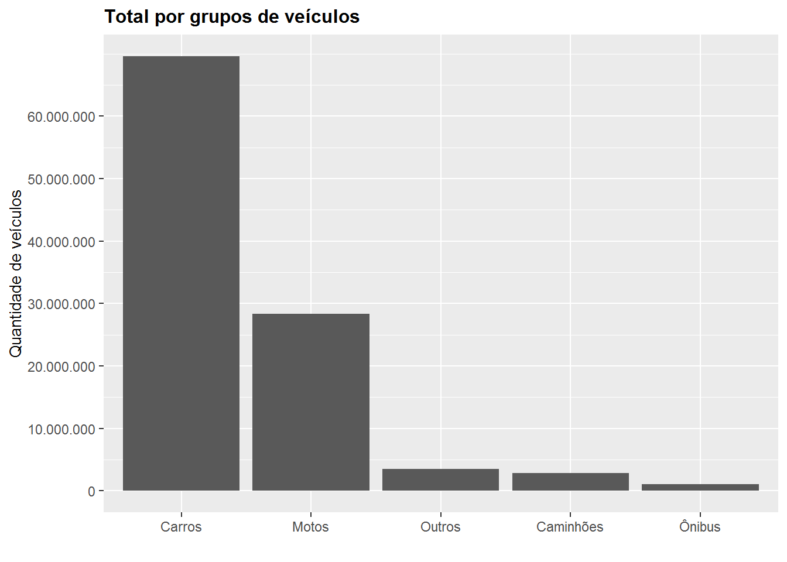

Frota de veiculos
Introdução
Nessa quarentena verificou-se uma diminuição bem grande na circulação de veículos pelas ruas, rodovias e estradas. Mas mesmo assim, ainda parece ter bastante veículos circulando, o que me deixou com uma pulga atrás da orelha: Quantos veículos têm em circulação no Brasil?
Os dados foram coletados do site do Denatran (Departamento Nacional de Trânsito), que os publicou em março de 2020, com atualizações no final de março do mesmo ano.
As fontes dos dados estão no final da página
Bibliotecas
# Bibliotecas do projeto
library(ggplot2)
library(dplyr)
library(Hmisc)
library(stringr)
library(knitr)
library(rmarkdown)
library(scales)
library(sqldf)
library(ggthemes)
library(RColorBrewer)
library(highcharter)
library(viridis) Carregar dados
df_frotas <- read.csv('data/denatran_frotas.csv', sep=';')
df_cidades <- read.csv('data/brasil_cidades.csv', sep=';')
df_populacao <- read.csv('data/populacao_estimada_2019.csv', sep=';')Conhecer os dados
Frotas
Cada linha desse dataset refere-se aos dados de cada cidade do país. Nas primeiras colunas temos informações regionais (cidade, estado, região) e as colunas seguintes são com os tipos de veículos definidos pela CTB (Código de Trânsito Brasileiro), e suas quantidades, e no final temos o total de veículos da cidade.
# summary(df_frotas)
str(df_frotas)## 'data.frame': 5570 obs. of 29 variables:
## $ id_cidade : int 79 80 81 82 83 84 85 86 87 88 ...
## $ nome_cidade : chr "Acrelândia" "Assis Brasil" "Brasiléia" "Bujari" ...
## $ id_estado : int 1 1 1 1 1 1 1 1 1 1 ...
## $ uf : chr "AC" "AC" "AC" "AC" ...
## $ nome_estado : chr "Acre" "Acre" "Acre" "Acre" ...
## $ id_regiao : int 1 1 1 1 1 1 1 1 1 1 ...
## $ nome_regiao : chr "Norte" "Norte" "Norte" "Norte" ...
## $ automovel : int 1347 319 2287 615 607 6830 1761 570 10 615 ...
## $ bonde : int 0 0 0 0 0 0 0 0 0 0 ...
## $ caminhao : int 344 25 279 121 88 731 256 116 5 96 ...
## $ caminhao_trator : int 27 0 154 30 3 73 118 5 0 4 ...
## $ caminhonete : int 642 146 1165 269 227 2807 829 344 13 313 ...
## $ camioneta : int 49 18 80 15 30 307 79 32 1 29 ...
## $ chassi_plataforma : int 0 0 0 0 0 1 0 0 0 0 ...
## $ ciclomotor : int 2 2 4 7 5 32 4 33 0 1 ...
## $ micro_onibus : int 10 3 6 5 3 59 6 3 0 4 ...
## $ motocicleta : int 3210 1118 4435 938 1054 15538 2431 2077 65 2095 ...
## $ motoneta : int 374 123 960 51 123 6638 709 616 28 528 ...
## $ onibus : int 42 3 19 13 17 84 16 12 0 15 ...
## $ quadriciclo : int 0 0 0 0 0 0 0 0 0 0 ...
## $ reboque : int 67 15 112 23 22 42 98 12 0 1 ...
## $ semirreboque : int 39 0 203 38 4 156 147 9 0 5 ...
## $ side_car : int 0 0 0 0 0 0 0 0 0 0 ...
## $ outros : int 0 0 0 0 0 1 0 0 0 0 ...
## $ trator_de_esteiras: int 0 0 0 0 0 0 0 0 0 0 ...
## $ trator_de_rodas : int 0 0 0 0 0 0 0 0 0 0 ...
## $ triciclo : int 0 0 2 1 0 10 3 4 0 0 ...
## $ utilitario : int 10 2 31 3 1 107 16 12 0 7 ...
## $ total_frota : int 6163 1774 9737 2129 2184 33416 6473 3845 122 3713 ...# 5570 linhas (observações) e 29 colunas (variáveis)#head(df_frotas, n = 5)
paged_table(df_frotas, options = list(rows.print = 5, max.print=20))Cidades
Neste dataframe temos os dados relativos as cidades do Brasil, como o nome, estado, região e código do ibge.
str(df_cidades)## 'data.frame': 5601 obs. of 9 variables:
## $ id_cidade : int 1 2 3 4 5 6 7 8 9 10 ...
## $ nome_cidade: chr "Afonso Cláudio" "Água Doce do Norte" "Águia Branca" "Alegre" ...
## $ ibge_cidade: int 3200102 3200169 3200136 3200201 3200300 3200359 3200409 3200508 3200607 3200706 ...
## $ id_estado : int 8 8 8 8 8 8 8 8 8 8 ...
## $ nome_estado: chr "Espírito Santo" "Espírito Santo" "Espírito Santo" "Espírito Santo" ...
## $ uf : chr "ES" "ES" "ES" "ES" ...
## $ ibge_estado: int 32 32 32 32 32 32 32 32 32 32 ...
## $ id_regiao : int 3 3 3 3 3 3 3 3 3 3 ...
## $ nome_regiao: chr "Sudeste" "Sudeste" "Sudeste" "Sudeste" ...# 5601 linhas (observações) e 9 colunas (variáveis)População
E no dataframe da população temos a quantidade de pessoas (população estimada pelo PNAD em 2019) em cada estado do país.
str(df_populacao)## 'data.frame': 27 obs. of 4 variables:
## $ id : int 1 2 3 4 5 6 7 8 9 10 ...
## $ nome_estado : chr "Acre" "Alagoas" "Amazonas" "Amapá" ...
## $ uf : chr "AC" "AL" "AM" "AP" ...
## $ populacao_estimada_2019: int 881935 3337357 4144597 845731 14873064 9132078 3015268 4018650 7018354 7075181 ...# 27 linhas (observações) e 4 colunas (variáveis)Analisar os dados
Vamos começar analisar aspectos mais gerais, depois partimos para os detalhes.
sum(df_frotas$total_frota) -> frota_total
print(paste("Frota total é de ", format(frota_total, big.mark = "."), " veículos"))## [1] "Frota total é de 105.376.352 veículos"Não temos uma linha com os totais para cada tipo de veículo. Poderíamos criar uma variável para cada tipo, mas isso daria muito trabalho, porque das 29 colunas, 21 são os tipos dos veículos. Mas, podemos criar um novo dataframe com duas informações: o tipo do veículo e o seu total.
# Criar um novo dataframe a partir do original, com uma coluna sendo os nomes dos tipos e outra com os totais
df_tipos_frota <- data.frame(tipo_frota = names(df_frotas[,8:28]), total = colSums(df_frotas[,8:28]))
# Ordenar os registros
df_tipos_frota <- df_tipos_frota %>% arrange(desc(total))
# reiniciar o índice das colunas
rownames(df_tipos_frota) <- NULL
# Melhorando a visualização do nome: retirar os underline e capitalizar a primeira letra
df_tipos_frota$tipo_frota <- str_replace(df_tipos_frota$tipo_frota, '_', ' ')
df_tipos_frota$tipo_frota <- str_replace(df_tipos_frota$tipo_frota, '_', ' ') # ???
df_tipos_frota$tipo_frota <- capitalize(df_tipos_frota$tipo_frota)
# df_tipos_frotaPodemos melhorar esse dataframe, e adicionar uma coluna com as porcentagens em relação ao total.
df_tipos_frota$quantidade_rel <- round((df_tipos_frota$total / frota_total) * 100,4)
# mostrar tabela do knitr
#kable(df_tipos_frota, caption="Total por tipo de veículo")
paged_table(df_tipos_frota, options = list(rows.print = 5))Aqui podemos ver que os automóveis representam mais da metade do total de veículos, com um pouco mais do dobro do segundo colocado, as motocicletas. Inclusive, ambos os tipos dominam o mercado nacional, com praticamente 3/4 de toda a frota. Vemos que apenas os 9 primeiros veículos passam da casa de 1 milhão de unidades.
df_tipos_frota_1m <- df_tipos_frota[df_tipos_frota$total > 1000000, 1:2]
# Formatar o valor da escala de y
point <- format_format(big.mark = ".", decimal.mark = ",", scientific = FALSE)
max_tipo_frota <- max(df_tipos_frota_1m$total)
ggplot(df_tipos_frota_1m, aes(x= reorder(tipo_frota, -total), y=total)) +
geom_bar(stat = "identity") +
ggtitle('Total por tipo de veículos') +
xlab('') +
ylab('Quantidade de veículos') +
scale_y_continuous(labels = point, limits = c(0,max_tipo_frota), breaks = seq(0, max_tipo_frota, by=10000000)) +
theme(legend.position="none",
plot.title = element_text(size = 12, face='bold'),
axis.title = element_text(size=10, color='black'))
Podemos imaginar que destes vários tipos de veículos, nem todos eles são usados para circulação de pessoas e mercadorias, alguns têm objetivos bem definidos. Por exemplo, um caminhão trator não é bem o tipo de veículo que as pessoas usem para circulação, podemos até vê-los rodando por aí, mas normalmente ele é usado em obras ou para serviços específicos, como fazer e/ou tampar buracos. O mesmo vale para reboques, semirreboques e outros tipos de tratores.
Então, daquele número total de veículos, vamos separar parte dele, considerando agora os tipos de veículos que são mais usados para circulação de pessoas e mercadorias: Automóvel, caminhão, caminhonete, camioneta, ciclomotor, micro-ônibus, motocicleta, motoneta, ônibus, quadriciclo, triciclo e utilitário.
- grupo carros = Automóvel, caminhonete, camioneta, utilitário
- grupo motos = Ciclomotor, motocicleta, motoneta, quadriciclo, triciclo
- grupo caminhões = Caminhão
- grupo ônibus = Micro-ônibus, ônibus
- grupo outros = veículos-ferramenta, bonde, e outros
# Criando os grupos
gr1 <- c("Automovel", "Caminhonete", "Camioneta", "Utilitario")
gr2 <- c("Motocicleta", "Motoneta", "Ciclomotor", "Triciclo", "Quadriciclo")
gr3 <- c("Caminhao")
gr4 <- c("Micro onibus", "Onibus")
# gr5 = outros
df_tipos_frota$grupo <- ifelse(df_tipos_frota$tipo_frota %in% gr1, "Carros",
ifelse(df_tipos_frota$tipo_frota %in% gr2, "Motos",
ifelse(df_tipos_frota$tipo_frota %in% gr3, "Caminhões",
ifelse(df_tipos_frota$tipo_frota %in% gr4, "Ônibus",
"Outros" ))))# Usando o dplyr para agrupar os dados e ordená-los
df_frotas_grupos <- df_tipos_frota %>% group_by(grupo) %>% summarise(total = sum(total)) %>% arrange(desc(total))
# Tabela com total relativo por grupo
df_frotas_grupos$total_rel <- round((df_frotas_grupos$total / frota_total * 100),4)
kable(df_frotas_grupos, caption = "Grupos de veículos")| grupo | total | total_rel |
|---|---|---|
| Carros | 69597199 | 66.0463 |
| Motos | 28350655 | 26.9042 |
| Outros | 3529551 | 3.3495 |
| Caminhões | 2834488 | 2.6899 |
| Ônibus | 1064459 | 1.0101 |
max_tipo_frota_grupo <- max(df_frotas_grupos$total)
ggplot(df_frotas_grupos, aes(x= reorder(grupo, -total), y=total)) +
geom_bar(stat = "identity") +
ggtitle('Total por grupos de veículos') +
xlab('') +
ylab('Quantidade de veículos') +
scale_y_continuous(labels = point, limits = c(0,max_tipo_frota_grupo), breaks = seq(0, max_tipo_frota_grupo, by=10000000)) +
theme(legend.position="none",
plot.title = element_text(size = 12, face='bold'),
axis.title = element_text(size=10, color='black'))
Com o agrupamento de veículos, a diferença do grupo carros para os demais é ainda maior, com este ficando com 66% da quantidade da frota total de veículos, seguida das motos com um pouco mais de 1/4 do total nacional, e as demais categorias somam cerca de 7%.
cores <- c("#EFC000", "#0073C2", "#2b6a39", "#CD534C", "#868686")
ggplot(df_frotas_grupos, aes(x="", y=total, fill=grupo))+
geom_bar(stat="identity", width = 1, color="white")+
coord_polar("y", start=0) +
scale_fill_manual(values = cores) +
theme_void()
Regiões e Estados
Agora que sabemos quantos veículos e quais seus tipos são os preferidos dos brasileiros, podemos descer um nível na análise, e entender a distribuição da frota de veículos nas regiões e nos estados.
Na tabela abaixo temos uma coluna com o total de veículos por região, e uma outra coluna com os percentuais de veículos por região, em relação ao total nacional. Podemos destacar a região Sudeste com quase metade toda a frota nacional.
sql_r <- "SELECT nome_regiao, SUM(total_frota) as Total FROM df_frotas GROUP BY nome_regiao"
df_frotas_regiao_total <- sqldf(sql_r)
df_frotas_regiao_total$frota_rel <- round((df_frotas_regiao_total$Total / frota_total) * 100, 4)
df_frotas_regiao_total <- df_frotas_regiao_total %>% arrange(desc(df_frotas_regiao_total$Total))
kable(df_frotas_regiao_total, caption = 'Veículos por região')| nome_regiao | Total | frota_rel |
|---|---|---|
| Sudeste | 51009181 | 48.4067 |
| Sul | 20647724 | 19.5943 |
| Nordeste | 18288563 | 17.3555 |
| Centro-Oeste | 10591660 | 10.0513 |
| Norte | 4839224 | 4.5923 |
sql <- "SELECT nome_estado, uf, SUM(total_frota) as Total, nome_regiao FROM df_frotas GROUP BY nome_estado, nome_regiao"
df_frotas_estados_total <- sqldf(sql)
df_frotas_estados_total$frota_rel <- round((df_frotas_estados_total$Total / frota_total) * 100, 4)# usando a biblioteca highcharter
df_frotas_estados_total %>%
arrange(desc(Total)) %>%
hchart(type="bar", hcaes(x= nome_estado, y=Total, group=nome_regiao)) %>%
hc_title(text = 'Total de veículos por estado') %>%
hc_subtitle(text = "Fonte: Denatran (março/2020)") %>%
hc_yAxis(title = list(enabled = FALSE, labels = list(format ="{value: %b}"), style = list(color = '#333333', fontFamily = "Arial"))) %>%
hc_xAxis(title = list(text = "Estados"), style = list(color = '#333333', fontFamily = "Arial")) %>%
hc_add_theme(hc_theme_flat()) %>%
hc_size(NULL, 600)Com este gráfico e a tabela podemos ver que:
- a maior parte da frota está concentrada na região Sudeste, com quase a metade da frota do país (48%) e São Paulo sendo o estado com a maior delas, seguido por Minas Gerais;
- O Sul vem em seguida com 19,5%, com o Paraná, que tem a terceira maior frota do país, seguido pelo Rio Grande do Sul;
- No Nordeste (17,3%), a Bahia é o estado com a maior frota, seguido por Ceará e Pernambuco;
- No Centro Oeste (10%), o estado de Goiás é que possui a maior frota;
- A região Norte é a que possui a menor frota (4,5%), com os três estados de menor frota do país: Amapá, Roraima e Acre.
Fazendo algumas equivalências com a frota de São Paulo, que tem cerca de 30 milhões de veículos:
- Ela é maior que toda a frota da região Sul somada _ que tem cerca de 21 milhões de veículos;
- Aliás, ela é maior que a soma de qualquer uma das regiões;
- Se somarmos as frotas das regiões Norte, Centro Oeste e Nordeste, elas possuem cerca de 31 milhões de veículos, apenas 1 milhão a mais que SP.
Se voltarmos no nosso primeiro gráfico desse documento, vamos ver que o tipo de veículo com mais unidades são os automóveis. Então, vamos repetir o gráfico anterior, mas dessa vez plotando apenas a frota de automóveis por estados.
sql <- "SELECT id_estado, nome_estado, uf, nome_regiao, SUM(automovel) as Total FROM df_frotas GROUP BY id_estado, nome_estado, nome_regiao"
df_frotas_estados_automovel <- sqldf(sql)
df_frotas_estados_automovel$frota_rel <- round((df_frotas_estados_automovel$Total / frota_total) * 100, 4)df_frotas_estados_automovel %>%
arrange(desc(Total)) %>%
hchart(type="treemap", hcaes(x= nome_estado, value=Total, color=Total)) %>%
hc_title(text = 'Total de automóveis por estado') %>%
hc_subtitle(text = "Fonte: Denatran (março/2020)") %>%
hc_yAxis(title = list(enabled = FALSE, labels = list(format ="{value: %b}"), style = list(color = '#333333', fontFamily = "Arial"))) %>%
hc_xAxis(title = list(text = "Estados"), style = list(color = '#333333', fontFamily = "Arial")) %>%
hc_add_theme(hc_theme_sandsignika()) %>%
hc_size(NULL, 600)Observando nosso gráfico de árvore ou treemap, percebemos que as coisas não mudam muito, São Paulo continua bem a frente também na quantidade de automóveis, seguido por Minas Gerais, Rio de Janeiro, Paraná e Rio Grande do Sul.
Aproveitando o ensejo, entre os dados que estamos carregando, temos o da população por estado. Poderíamos cruzar estes dados, e apenas por curiosidade, verificar como seria a distribuição de carros por habitante dentro dos estados.
sql <- "SELECT f.*, p.populacao_estimada_2019
FROM df_frotas_estados_automovel f
LEFT JOIN df_populacao p ON f.id_estado = p.id"
df_frotas_estados_auto_pop <- sqldf(sql)
df_frotas_estados_auto_pop$auto_pop <- round(df_frotas_estados_auto_pop$Total / df_frotas_estados_auto_pop$populacao_estimada_2019, 3)
df_frotas_estados_auto_pop$pop_auto <- round(df_frotas_estados_auto_pop$populacao_estimada_2019 / df_frotas_estados_auto_pop$Total, 3)hc_data <- df_frotas_estados_auto_pop %>% arrange(-pop_auto, -auto_pop)
hchart(hc_data, type="treemap", hcaes(x= nome_estado, value=pop_auto, color=auto_pop)) %>%
hc_title(text = 'Quantidade de habitantes por automóveis por estado') %>%
hc_add_theme(hc_theme_google()) %>%
hc_size(NULL, 600)O título pode soar estranho e esse gráfico pode parecer confuso numa primeira olhada _ e eu sei que estou violando regras da visualização de dados, de tornar o gráfico o mais auto-explicativo possível _ mas é que aqui temos duas informações inversas, e queria mostrá-las dessa forma.
As cores mostram uma tendência: quanto mais escuro, mais o estado tem veículos por habitante (população estimada de 2019), então no caso, o estado que é o primeiro é o Distrito Federal, seguido por Santa Catarina, São Paulo e Paraná; Maranhão é o último e o Pará o penúltimo.
Os estados com os quadros maiores são o inverso, ou seja, os que têm menos carros por habitante. Mas ao colocar o mouse no gráfico, é possível ver a informação, por exemplo, no Maranhão, temos um automóvel para cada 15 pessoas, enquanto que no Distrito Federal temos um automóvel para cada 2 pessoas.
Para analisar as frotas por estados, temos a dificuldade de termos 27 deles e apresentar a todos. Portanto teremos que dar um jeito de passar o valor do estado que queremos analisar (no caso apenas a UF), e retornar seus dados. Para esta análise, vamos apenas mostrar o estado de São Paulo.
Antes de tudo vamos criar um novo dataframe, agrupando os dados.
#df_frotas[, 3:28]
#names(df_frotas)
df_frotas_estados <- sqldf("SELECT
nome_estado,
uf,
SUM(automovel) as Automovel,
SUM(bonde) as Bonde,
SUM(caminhao) as Caminhao,
SUM(caminhao_trator) as 'Caminhao trator',
SUM(caminhonete) as Caminhonete,
SUM(camioneta) as Camioneta,
SUM(chassi_plataforma) as 'Chassi plataforma',
SUM(ciclomotor) as Ciclomotor,
SUM(micro_onibus) as 'Micro-onibus',
SUM(motocicleta) as Motocicleta,
SUM(motoneta) as Motoneta,
SUM(onibus) as Onibus,
SUM(quadriciclo) as Quadriciclo,
SUM(reboque) as Reboque,
SUM(semirreboque) as Semirreboque,
SUM(side_car) as 'Side car',
SUM(outros) as Outros,
SUM(trator_de_esteiras) as 'Trator de esteiras',
SUM(trator_de_rodas) as 'Trator de rodas',
SUM(triciclo) as Triciclo,
SUM(utilitario) as Utilitario
FROM df_frotas
GROUP BY nome_estado")# Essa função recebe o dataframe com os estados, a uf do estado que queremos analisar
# e retorna uma linha com os dados que serão usados no gráfico
dataframeEstado <- function(df, uf = 'SP'){
n_cols <- dim(df)[2]
t_df <- as.data.frame(t(df[df$uf == uf,3:n_cols]))
if(is.data.frame(t_df) & ncol(t_df) == 0){
empty_df <- data.frame(Ints=integer())
return(empty_df)
}
colnames(t_df)[1] <- 'total' # renomear coluna
t_df$total <- sapply(t_df$total, as.numeric) # converte os valores em formato numérico
t_df <- cbind(tipo = rownames(t_df), t_df) # criar coluna com os tipos
rownames(t_df) <- NULL # zerar índice
t_df <- t_df[t_df$total > 50000,] # não retornar valores zerados
return(t_df)
}
# Recebe a UF e retorna o nome do estado
nomeEstado <- function(uf = ''){
if(!is.null(uf)){
sql <- sprintf('SELECT nome_estado FROM df_cidades WHERE uf = "%s" LIMIT 1', uf)
estado_nome <- sqldf(sql)
return(estado_nome)
} else {
return("")
}
}
# Função para gerar o gráfico
graficoEstado <- function(df, uf = 'SP'){
df_estado <- dataframeEstado(df, uf) # trazer o dataframe apenas com os dados que serão plotados
# Verifica se o dataframe possui dados
if(is.data.frame(df_estado) & nrow(df_estado) == 0){
return("Erro: Nenhum dado encontrado.")
}
estado_nome <- nomeEstado(uf) # Setar o nome do estado
df_estado %>%
arrange(desc(total)) %>%
hchart(type="bar", hcaes(x= tipo, y=total)) %>%
hc_title(text = paste('Total por tipo de veículos por estado:', estado_nome)) %>%
hc_subtitle(text = "Fonte: Denatran (março/2020)") %>%
hc_yAxis(title = list(enabled = FALSE, labels = list(format ="{value: %b}"), style = list(color = '#333333', fontFamily = "Arial"))) %>%
hc_xAxis(title = list(text = "Tipos de veículos"), style = list(color = '#333333', fontFamily = "Arial")) %>%
hc_add_theme(hc_theme_google())
}
graficoEstado(df_frotas_estados, 'SP')Para encerrarmos nossa análise, temos a quantidade de veículos por tipo no estado de São Paulo. Mais de 18 milhões de automóveis, seguida por motocicleta, caminhonete, camioneta, motoneta e caminhão. Apenas estão plotados no gráfico os veículos cujos valores foram maiores do que 50.000 unidades.
Fontes de dados e referências
- Os dados foram coletados do site do - Denatran (Departamento Nacional de Trânsito), que os publicou em janeiro de 2020, com atualizações no final de março do mesmo ano;
- Os dados das cidades foram coletados do repositório chandez/Estados-Cidades-IBGE
- Os dados da população foram retirados do site do IBGE Estimativas da População.